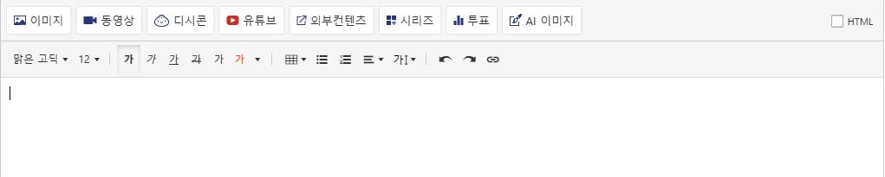
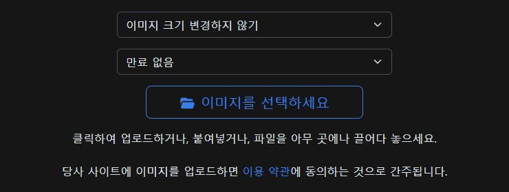

글쓰기 화면에서 HTML 모드 끄기
편집기 오른쪽 위의 HTML 체크를 해제하고, 본문에서 이미지를 넣을 위치를 선택하세요. 기본 말머리 안내문은 자동으로 정리됩니다.

디시 글쓰기 화면에 이미지 업로드 버튼을 추가합니다.
다운로드한 파일을 폴더에 풀어 주세요.
브라우저 주소창에 아래 주소를 입력하세요.
chrome://extensionsedge://extensions개발자 모드를 켜고 압축해제된 확장 프로그램을 로드합니다를 누르세요.manifest.json이 들어 있는 폴더를 선택한 뒤 디시 글쓰기 페이지를 새로고침하세요.
설치한 폴더는 삭제하지 마세요.
편집기 오른쪽 위의 HTML 체크를 해제하고, 본문에서 이미지를 넣을 위치를 선택하세요. 기본 말머리 안내문은 자동으로 정리됩니다.

본문 위에서 이미지 업로드를 누르세요.
새 창에서 이미지를 선택하세요를 누르세요. 여러 장을 선택할 수 있습니다.
업로드 후 본문을 확인하고 디시의 인증·등록 절차를 진행하세요.
